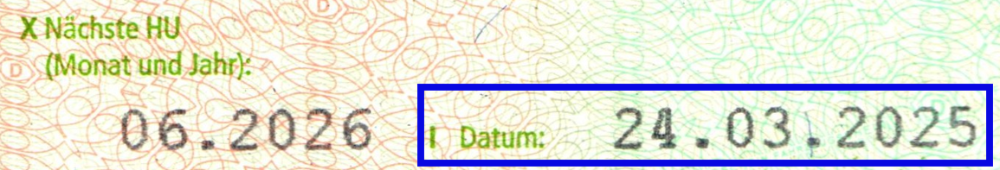

Nº orden de dia del año Teil 1
Convierte un día/año a su fecha completa
Calcular Fecha
OJO!!! Si no coincide puede tratarse de un duplicado
El programa tiene en cuenta los años bisiestos.

MENÚ PRINCIPAL